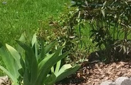
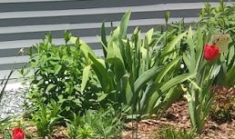

General Weigela Info
- Blooms in the early summer
- No care needed during blooming season
- prune after bloom to maybe get later summer blooms
- General fertilizer
- no known pests
- Pretty hardy and easy care, prune low early fall
- Located either end of parking area
- For more info visit Weigela info
General Spirea Info
- Bloom in the spring and thru summer
- Clip flowers regularly for continued blooms
- No need to thin
- General fertilizer
- No known pests
- prune low mid fall to match other shrubs
- Located in center of parking area garden
- For more info visit Spiraea info
General Rose Info
- Blooms in the early-midsummer
- deadhead regularly
- cut back in spring when forsythia bloom
- General fertilizer
- 
- Pests include bugs and some other animal, needs insecticide!!!
- Not the easiest to care for , check site below for info
- Located in parking area and next to porch and other random places
- For more info visit Rose info
General Echinacea (Conflower) Info
- Blooms in the summer
- Clip all foliage after flower fades, deadhead occasionally
- Thin in spring and during season as flower speads
- General fertilizer

- Pests include deer, rabbits and ground hog
- Perenniel,tall and spread through gardens, good to naturalize the woods edge
- Located in various gardens with colors being pink/purple, and white mostly in front
- For more info visit coneflower info
General Peony Info
- Blooms in the summer
- Clip all foliage after flower fades and leaves start to yellow
- No thinning neccesary , deadhead regularly and use peony rings to hold up heavy blooms
- General fertilizer
- No known pests
- ants love these but are also needed to force blooms
- Located in parking area and front gardens
- For more info visit Peony info
General Black-eye Susan Info
- Blooms mid Summer
- Deadhead regularly to promote new blooms
- Thin in spring and fall, these will take over the garden!
- General fertilizer

- Usually deer and ground hog likes these
- Perenniel,At the end of the flowering season,cut down to ground.
- Found everywhere in yard front and back
- For more info visit black-eyed Susan info
General Iris Info
- Blooms in the early summer
- Clip flower after flower fades, a pull off dryed leaves
- Thin as needed
- General fertilizer
- 
- No known pests
- Perenniel,tall flowers
- Located in various gardens mostly in front with purple/white blooms
- For more info visit Irisinfo
This front parking area garden requires some weeding as does the parking spots. Use weed killer on the parking spots and rocks but not near the plants. Regular weeding,especially violets and crab grass will help keep this area nice. Add mulch to keep weeds down in all the gardens!
Along the side there is also Bee Balm plants that ar tall and get pink flowers, once they fade, cut to 12 inches and they will flower again
Additionally,along the side there is one Astible plant that needs little care